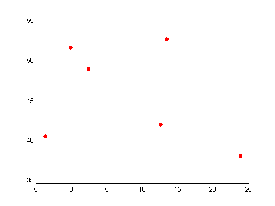

plotGoogleMap
Plots a google map on the current axes using the Google Static Maps API
Contents
Syntax
h = plotGoogleMap(Property, Value,...); [lonVec latVec imag] = plotGoogleMap(Property, Value,...);
Description
Plots the google map on the current axes given the input properties selected
Inputs
- Property - property name from the list below along with the
- Value for the property. The default for each porperty is in parenthesis.
- -- 'MapType' - ('roadmap') Type of map to return. Any of [roadmap, satellite, terrain, hybrid) See the Google Maps API for more information.
- -- 'Alpha' (1) - (0-1) Transparency level of the map (0 is fully transparent). While the map is always moved to the bottom of the plot (i.e. will not hide previously drawn items), this can be useful in order to increase readability if many colors are plotted (using SCATTER for example).
- -- 'Marker' - The marker argument is a text string with fields conforming to the Google Maps API. The following are valid examples: '43.0738740,-70.713993' (dflt midsize orange marker) '43.0738740,-70.713993,blue' (midsize blue marker) '43.0738740,-70.713993,yellowa' (midsize yellow marker with label "A") '43.0738740,-70.713993,tinyredb' (tiny red marker with label "B")
Outputs
- h - Handle to the plotted map
- lonVect - Vector of Longidute coordinates (WGS84) of the image
- latVect - Vector of Latidute coordinates (WGS84) of the image
- imag - Image matrix (height,width,3) of the map
References:
http://www.mathworks.com/matlabcentral/fileexchange/24113 http://www.maptiler.org/google-maps-coordinates-tile-bounds-projection/ http://developers.google.com/maps/documentation/staticmaps/
Acknowledgement to Val Schmidt for his submission of get_google_map.m Acknowledgement to Zohar Bar-Yehuda for his submission of plot_google_map.mp
Copyright
Copyright (c) 2010, Zohar Bar-Yehuda Copyright (c) 2010, Val Schmidt All rights reserved.
Redistribution and use in source and binary forms, with or without modification, are permitted provided that the following conditions are met:
* Redistributions of source code must retain the above copyright
notice, this list of conditions and the following disclaimer.
* Redistributions in binary form must reproduce the above copyright
notice, this list of conditions and the following disclaimer in
the documentation and/or other materials provided with the distributionTHIS SOFTWARE IS PROVIDED BY THE COPYRIGHT HOLDERS AND CONTRIBUTORS "AS IS" AND ANY EXPRESS OR IMPLIED WARRANTIES, INCLUDING, BUT NOT LIMITED TO, THE IMPLIED WARRANTIES OF MERCHANTABILITY AND FITNESS FOR A PARTICULAR PURPOSE ARE DISCLAIMED. IN NO EVENT SHALL THE COPYRIGHT OWNER OR CONTRIBUTORS BE LIABLE FOR ANY DIRECT, INDIRECT, INCIDENTAL, SPECIAL, EXEMPLARY, OR CONSEQUENTIAL DAMAGES (INCLUDING, BUT NOT LIMITED TO, PROCUREMENT OF SUBSTITUTE GOODS OR SERVICES; LOSS OF USE, DATA, OR PROFITS; OR BUSINESS INTERRUPTION) HOWEVER CAUSED AND ON ANY THEORY OF LIABILITY, WHETHER IN CONTRACT, STRICT LIABILITY, OR TORT (INCLUDING NEGLIGENCE OR OTHERWISE) ARISING IN ANY WAY OUT OF THE USE OF THIS SOFTWARE, EVEN IF ADVISED OF THE POSSIBILITY OF SUCH DAMAGE.
Example
Plot a map showing some capitals in Europe:
lat = [48.8708 51.5188 41.9260 40.4312 52.523 37.982]; lon = [2.4131 -0.1300 12.4951 -3.6788 13.415 23.715]; plot(lon,lat,'.r','MarkerSize',20) plotGoogleMap %